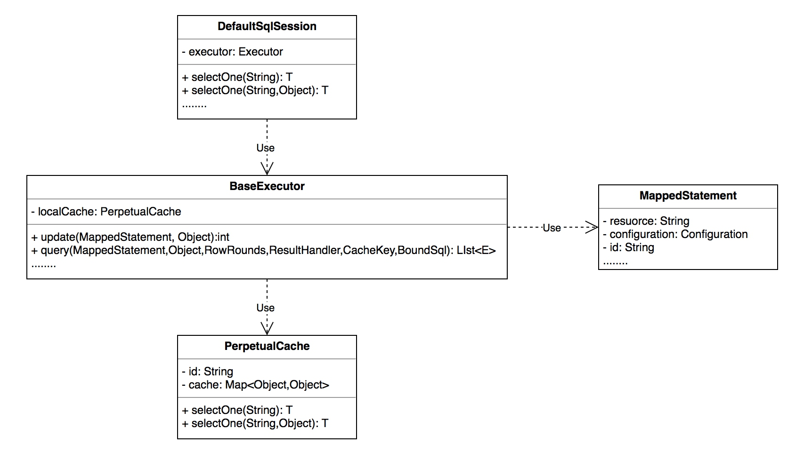

MyBatis 是一款优秀的持久层框架，它支持自定义 SQL、存储过程以及高级映射。MyBatis 免除了几乎所有的 JDBC 代码以及设置参数和获取结果集的工作。MyBatis 可以通过简单的 XML 或注解来配置和映射原始类型、接口和 Java POJO (Plain Old Java Objects，普通老式 Java 对象) 为数据库中的记录。
MyBatis简介 什么是MyBatis
MyBatis 是一款优秀的持久层框架，它支持自定义 SQL、存储过程以及高级映射。MyBatis 免除了几乎所有的 JDBC 代码以及设置参数和获取结果集的工作。MyBatis 可以通过简单的 XML 或注解来配置和映射原始类型、接口和 Java POJO (Plain Old Java Objects，普通老式 Java 对象) 为数据库中的记录。
MyBatis功能概况
与其他对象关系映射 框架不同，MyBatis没有将Java 对象 与数据库 表关联起来，而是将Java方法与SQL 语句关联。MyBatis允许用户充分利用数据库 的各种功能，例如存储过程、视图 、各种复杂的查询以及某数据库的专有特性。如果要对遗留数据库、不规范的数据库进行操作，或者要完全控制SQL的执行，MyBatis是一个不错的选择。
与JDBC 相比，MyBatis简化了相关代码：SQL语句在一行代码中就能执行。MyBatis提供了一个映射引擎，声明式的把SQL语句执行结果与对象树映射起来。通过使用一种内建的类XML表达式语言，或者使用Apache Velocity 集成的插件，SQL语句可以被动态的生成。
MyBatis与Spring Framework 和Google Guice 集成，这使开发者免于依赖性问题。
MyBatis支持声明式数据缓存（declarative data caching）。当一条SQL语句被标记为“可缓存”后，首次执行它时从数据库获取的所有数据会被存储在一段高速缓存 中，今后执行这条语句时就会从高速缓存中读取结果，而不是再次命中数据库。MyBatis提供了基于 Java HashMap 的默认缓存实现，以及用于与OSCache 、Ehcache 、Hazelcast 和Memcached 连接的默认连接器。MyBatis还提供API 供其他缓存实现使用。
MyBatis优点
简单易学：本身就很小且简单。没有任何第三方依赖，最简单安装只要两个jar文件+配置几个sql映射文件易于学习，易于使用，通过文档和源代码，可以比较完全的掌握它的设计思路和实现。
灵活：mybatis不会对应用程序或者数据库的现有设计强加任何影响。 sql写在xml里，便于统一管理和优化。通过sql语句可以满足操作数据库的所有需求。
解除sql与程序代码的耦合：通过提供DAO层，将业务逻辑和数据访问逻辑分离，使系统的设计更清晰，更易维护，更易单元测试。sql和代码的分离，提高了可维护性。
提供映射标签，支持对象与数据库的orm字段关系映射
提供对象关系映射标签，支持对象关系组建维护
提供xml标签，支持编写动态sql。
第一个MyBatis程序 流程：搭建环境（导入MyBatis） ——> 编写代码 ——> 单元测试
搭建环境 搭建数据库：
1 2 3 4 5 6 7 8 9 10 11 12 13 14 15 16 17 18 CREATE DATABASE IF NOT EXISTS `mybatis`;USE `mybatis`; CREATE TABLE IF NOT EXISTS `user `( `id` INT (10 ) NOT NULL , `name` VARCHAR (30 ) NOT NULL , `pwd` VARCHAR (30 ) NOT NULL , PRIMARY KEY(`id`) )ENGINE= INNODB; INSERT INTO `user `(`id`, `name`, `pwd`) VALUES (1 , 'dcm' , '123456' ), (2 , 'test' , '123456' ), (3 , 'admin' , '123456' );
IDEA中新建Maven项目：
将新建项目后的src源文件夹删除，将该项目作为父工程进行使用
工程目录如下所示：
1 2 3 4 5 6 7 8 9 10 E:\PROGRAMDEMO\LEARNMYBATIS │ |pom.xml │ └─.idea .gitignore compiler.xml jarRepositories.xml misc.xml workspace.xml
导入Maven依赖：
JUnit
MyBatis
Mysql-connector
LearnMyBaits: pom.xml
1 2 3 4 5 6 7 8 9 10 11 12 13 14 15 16 17 18 19 20 21 22 23 24 25 26 27 28 29 30 31 32 33 34 35 36 37 38 39 <?xml version="1.0" encoding="UTF-8"?> <project xmlns ="http://maven.apache.org/POM/4.0.0" xmlns:xsi ="http://www.w3.org/2001/XMLSchema-instance" xsi:schemaLocation ="http://maven.apache.org/POM/4.0.0 http://maven.apache.org/xsd/maven-4.0.0.xsd" > <modelVersion > 4.0.0</modelVersion > <groupId > com.heavytiger</groupId > <artifactId > LearnMyBatis</artifactId > <version > 1.0-SNAPSHOT</version > <properties > <maven.compiler.source > 11</maven.compiler.source > <maven.compiler.target > 11</maven.compiler.target > </properties > <dependencies > <dependency > <groupId > mysql</groupId > <artifactId > mysql-connector-java</artifactId > <version > 8.0.25</version > </dependency > <dependency > <groupId > org.mybatis</groupId > <artifactId > mybatis</artifactId > <version > 3.5.7</version > </dependency > <dependency > <groupId > junit</groupId > <artifactId > junit</artifactId > <version > 4.12</version > <scope > test</scope > </dependency > </dependencies > </project >
编写代码 创建一个模块 使用Maven创建一个子项目，继承了父项目，不需要再次导包
MyBaits_01: pom.xml
1 2 3 4 5 6 7 8 9 10 11 12 13 14 15 16 17 18 19 20 <?xml version="1.0" encoding="UTF-8"?> <project xmlns ="http://maven.apache.org/POM/4.0.0" xmlns:xsi ="http://www.w3.org/2001/XMLSchema-instance" xsi:schemaLocation ="http://maven.apache.org/POM/4.0.0 http://maven.apache.org/xsd/maven-4.0.0.xsd" > <parent > <artifactId > LearnMyBatis</artifactId > <groupId > com.heavytiger</groupId > <version > 1.0-SNAPSHOT</version > </parent > <modelVersion > 4.0.0</modelVersion > <artifactId > MyBaits_01</artifactId > <properties > <maven.compiler.source > 11</maven.compiler.source > <maven.compiler.target > 11</maven.compiler.target > </properties > </project >
编写MyBatis核心配置文件 XML 配置文件中包含了对 MyBatis 系统的核心设置，包括获取数据库连接实例的数据源（DataSource）以及决定事务作用域和控制方式的事务管理器（TransactionManager）。
从 XML 文件中构建 SqlSessionFactory 的实例非常简单，建议使用类路径下的资源文件进行配置。 但也可以使用任意的输入流（InputStream）实例，比如用文件路径字符串或 file:// URL 构造的输入流。MyBatis 包含一个名叫 Resources 的工具类，它包含一些实用方法，使得从类路径或其它位置加载资源文件更加容易。
在resource下建立mybatis-config.xml配置文件：
1 2 3 4 5 6 7 8 9 10 11 12 13 14 15 16 17 18 19 20 21 22 <?xml version="1.0" encoding="UTF-8" ?> <!DOCTYPE configuration PUBLIC "-//mybatis.org//DTD Config 3.0//EN" "http://mybatis.org/dtd/mybatis-3-config.dtd" > <configuration > <environments default ="development" > <environment id ="development" > <transactionManager type ="JDBC" /> <dataSource type ="POOLED" > <property name ="driver" value ="com.mysql.cj.jdbc.Driver" /> <property name ="url" value ="jdbc:mysql://localhost:3306/mybatis?serverTimezone=Asia/Shanghai& useUnicode=true& characterEncoding=utf8& useSSL=false" /> <property name ="username" value ="root" /> <property name ="password" value ="37628981mm" /> </dataSource > </environment > </environments > <mappers > <mapper resource ="com/heavytiger/dao/UserMapper.xml" /> </mappers > </configuration >
编写MyBatis核心工具类 MyBatis应用通过SqlSessionFactory实例为核心，通过SqlSessionFactoryBuilder进行构建，SqlSessionFactoryBuilder需要读取2.2.2中的核心配置文件mybatis-config.xml，可以使用如下代码进行构建：
1 2 3 String resource = "org/mybatis/example/mybatis-config.xml" ; InputStream inputStream = Resources.getResourceAsStream(resource); SqlSessionFactory sqlSessionFactory = new SqlSessionFactoryBuilder().build(inputStream);
之后，即可以使用SqlSessionFactory获取SqlSession实例，从而执行所需的SQL命令，然而这样做稍显复杂，需要再次进行封装，将其做成核心工具类。
MyBatisUtils.java
1 2 3 4 5 6 7 8 9 10 11 12 13 14 15 16 17 18 19 20 21 22 23 24 25 26 27 28 29 30 package com.heavytiger.utils;import org.apache.ibatis.io.Resources;import org.apache.ibatis.session.SqlSession;import org.apache.ibatis.session.SqlSessionFactory;import org.apache.ibatis.session.SqlSessionFactoryBuilder;import java.io.IOException;import java.io.InputStream;public class MyBatisUtils private static SqlSessionFactory sqlSessionFactory; static { try { String resource = "mybatis-config.xml" ; InputStream inputStream = Resources.getResourceAsStream(resource); sqlSessionFactory = new SqlSessionFactoryBuilder().build(inputStream); } catch (IOException e) { e.printStackTrace(); } } public static SqlSession getSqlSession () return sqlSessionFactory.openSession(); } }
编写实体类 User.java
1 2 3 4 5 6 7 8 9 10 11 12 13 14 15 16 17 18 19 20 21 22 23 24 25 26 27 28 29 30 31 32 33 34 35 36 37 38 39 40 41 42 43 44 45 46 47 48 49 package com.heavytiger.pojo;public class User private Integer id; private String name; private String pwd; public User () } public User (Integer id, String name, String pwd) this .id = id; this .name = name; this .pwd = pwd; } @Override public String toString () return "User{" + "id=" + id + ", name='" + name + '\'' + ", pwd='" + pwd + '\'' + '}' ; } public Integer getId () return id; } public void setId (Integer id) this .id = id; } public String getName () return name; } public void setName (String name) this .name = name; } public String getPwd () return pwd; } public void setPwd (String pwd) this .pwd = pwd; } }
编写Dao接口 UserDao.java
1 2 3 4 5 6 7 8 9 10 11 12 13 14 package com.heavytiger.dao;import com.heavytiger.pojo.User;import java.util.List;public interface UserDao List<User> getUserList () ; }
编写Mapper.xml UserMapper.xml
1 2 3 4 5 6 7 8 9 10 11 12 <?xml version="1.0" encoding="UTF8" ?> <!DOCTYPE mapper PUBLIC "-//mybatis.org//DTD Mapper 3.0//EN" "http://mybatis.org/dtd/mybatis-3-mapper.dtd" > <mapper namespace ="com.heavytiger.dao.UserDao" > <select id ="getUserList" resultType ="com.heavytiger.pojo.User" > SELECT * FROM mybatis.user; </select > </mapper >
如果此处的xml中写了中文注释，则必须把encoding="UTF-8"改成encoding="UTF8"；否则会报错
单元测试 单元测试代码如下所示：
1 2 3 4 5 6 7 8 9 10 11 12 13 14 15 16 17 18 19 20 21 22 23 24 25 26 27 package com.heavytiger.dao;import com.heavytiger.pojo.User;import com.heavytiger.utils.MyBatisUtils;import org.apache.ibatis.session.SqlSession;import org.junit.Test;import java.util.List;import static org.junit.Assert.*;public class UserDaoTest @Test public void getUserList () SqlSession sqlSession = MyBatisUtils.getSqlSession(); UserDao userDao = sqlSession.getMapper(UserDao.class); List<User> userList = userDao.getUserList(); for (User user : userList) { System.out.println(user); } sqlSession.close(); } }
大概率会遇到该报错，无法找到UserMapper.xml
1 Caused by: java.io.IOException: Could not find resource com/heavytiger/dao/UserMapper.xml
原因是，使用Maven创建的工程，class文件会放置在Target目录下，而.xml文件不会自动被生成到Target目录中，因此在运行该工程的时候，无法找到UserMapper.xml
解决方案如下所示：
在Maven的pom.xml中进行如下配置：
1 2 3 4 5 6 7 8 9 10 11 12 13 14 15 16 17 18 19 20 <build > <resources > <resource > <directory > src/main/resource</directory > <includes > <include > **/*.properties</include > <include > **/*.xml</include > </includes > <filtering > true</filtering > </resource > <resource > <directory > src/main/java</directory > <includes > <include > **/*.properties</include > <include > **/*.xml</include > </includes > <filtering > true</filtering > </resource > </resources > </build >
若遇到报错乱码情况：
原因是Mapper.xml中出现了中文，需要将编码encoding="UTF-8"改成encoding="UTF8"；
最终修改完成后可以得到正确的结果：
1 2 3 User{id=1, name='dcm', pwd='123456'} User{id=2, name='test', pwd='123456'} User{id=3, name='admin', pwd='123456'}
CRUD教程 CRUD的基本流程
编写接口
编写对应的mapper.xml中的sql语句
单元测试，确保能够正常使用Dao层，确保增删改提交了事务
namespace namespace中的包名要和Dao/mapper接口的包名一致！
select 选择、查询语句；
id：对应的namespace包中的方法名，例如：List<User> getUserList();方法，此处对因为getUserList
resultType：Sql语句执行的返回值
parameterType：提供的参数类型
示例：
添加功能，根据id查询用户的信息
UserMapper.java添加如下方法：
1 2 3 4 5 6 User getUserById (Integer id) ;
UserMapper.xml中添加如下标签：
1 2 3 4 5 6 <select id ="getUserById" parameterType ="Integer" resultType ="com.heavytiger.pojo.User" > SELECT * FROM mybatis.user WHERE id = #{id}; </select >
#{id}表示使用方法形式参数Integer id中的id作为参数注入sql语句中
UserMapperTest.java中测试方法：
1 2 3 4 5 6 7 8 9 10 11 @Test public void getUserById () try (SqlSession sqlSession = MyBatisUtils.getSqlSession()) { UserMapper userMapper = sqlSession.getMapper(UserMapper.class); System.out.println(userMapper.getUserById(1 )); System.out.println(userMapper.getUserById(4 )); } catch (Exception e) { e.printStackTrace(); } }
可以使用try-with-resourcse语句，保证资源在每次出错后也会自动关闭 ，放入到try(statement)中的语句需要实现AutoClosable接口，实际上类似于自动添上了finally{resource.close();}
得到的结果：
1 2 User{id=1, name='dcm', pwd='123456'} null
insert 插入数据语句;
示例：
添加功能，新增用户记录
UserMapper.java添加如下方法：
1 2 3 4 5 6 Integer addUser (User user) ;
UserMapper.xml中添加如下标签：
1 2 3 4 5 <insert id ="addUser" parameterType ="com.heavytiger.pojo.User" > INSERT INTO mybatis.user(id, name, pwd) VALUES (#{id}, #{name}, #{pwd}); </insert >
UserMapperTest.java中测试方法：
1 2 3 4 5 6 7 8 9 10 11 12 @Test public void addUser () try (SqlSession sqlSession = MyBatisUtils.getSqlSession()) { UserMapper userMapper = sqlSession.getMapper(UserMapper.class); User tmp = new User(4 , "add" , "12345678" ); System.out.println(userMapper.addUser(tmp)); sqlSession.commit(); } catch (Exception e) { e.printStackTrace(); } }
得到的结果：
1 2 3 4 5 6 7 1 # 数据库中的记录 1 dcm 123456 2 test 123456 3 admin 123456 4 add 12345678
update 修改数据
示例：
添加功能，更新用户的信息
UserMapper.java添加如下方法：
1 2 3 4 5 6 Integer updateUser (User user) ;
UserMapper.xml中添加如下标签：
1 2 3 4 5 6 7 <update id ="updateUser" parameterType ="com.heavytiger.pojo.User" > UPDATE mybatis.user SET name=#{name}, pwd=#{pwd} WHERE id = #{id}; </update >
UserMapperTest.java中测试方法：
1 2 3 4 5 6 7 8 9 10 11 12 @Test public void updateUser () try (SqlSession sqlSession = MyBatisUtils.getSqlSession()) { UserMapper userMapper = sqlSession.getMapper(UserMapper.class); User tmp = new User(4 , "add&update" , "123456" ); System.out.println(userMapper.updateUser(tmp)); sqlSession.commit(); } catch (Exception e) { e.printStackTrace(); } }
得到的结果：
1 2 3 4 5 6 7 1 # 数据库中的记录 1 dcm 123456 2 test 123456 3 admin 123456 4 add&update 123456
delete 删除数据
示例：
添加功能，删除用户的记录
UserMapper.java添加如下方法：
1 2 3 4 5 6 Integer deleteUser (Integer id) ;
UserMapper.xml中添加如下标签：
1 2 3 4 5 6 <delete id ="deleteUser" parameterType ="Integer" > DELETE FROM mybatis.user WHERE id = #{id}; </delete >
UserMapperTest.java中测试方法：
1 2 3 4 5 6 7 8 9 10 11 12 13 @Test public void deleteUser () try (SqlSession sqlSession = MyBatisUtils.getSqlSession()) { UserMapper userMapper = sqlSession.getMapper(UserMapper.class); System.out.println(userMapper.deleteUser(1 )); System.out.println(userMapper.deleteUser(4 )); System.out.println(userMapper.deleteUser(5 )); sqlSession.commit(); } catch (Exception e) { e.printStackTrace(); } }
得到的结果：
1 2 3 4 5 6 7 1 1 0 # 数据库中的记录 2 test 123456 3 admin 123456
使用Map传输数据 示例：
添加功能，通过map传输数据，使得其中的数据作为用户信息插入到数据库中
UserMapper.java添加如下方法：
1 2 3 4 5 6 Integer deleteUser (Integer id) ;
UserMapper.xml中添加如下标签：
1 2 3 4 5 6 <insert id ="addUserWithMap" parameterType ="map" > INSERT INTO mybatis.user(id, name, pwd) VALUES (#{mapId1}, #{mapName1}, #{mapPwd1}), (#{mapId2}, #{mapName2}, #{mapPwd2}); </insert >
UserMapperTest.java中测试方法：
1 2 3 4 5 6 7 8 9 10 11 12 13 14 15 16 17 18 @Test public void addUserWithMap () try (SqlSession sqlSession = MyBatisUtils.getSqlSession()) { UserMapper userMapper = sqlSession.getMapper(UserMapper.class); Map<String, Object> map = new HashMap<>(); map.put("mapId1" , 4 ); map.put("mapName1" , "m1" ); map.put("mapPwd1" , "12345678" ); map.put("mapId2" , 5 ); map.put("mapName2" , "m2" ); map.put("mapPwd2" , "12345678" ); System.out.println(userMapper.addUserWithMap(map)); sqlSession.commit(); } catch (Exception e) { e.printStackTrace(); } }
得到的结果：
1 2 3 4 5 6 7 8 2 # 数据库中的记录 2 test 123456 3 admin 123456 4 m1 12345678 5 m2 12345678
说明Mybatis通过了反射等机制，查询到相应的数据并执行了注入或者获取，因此名称一定要对应，否则将无法查询
假设，我们的实体类，或者数据库中的表，字段或者参数过多，应该考虑使用Map
Map传递参数map.push(key, value)，直接在sql中通过#{key}取出即可使用，很便捷！
只有一个基本类时，可以直接使用在sql中获取
多个参数考虑使用Map 或者注解
模糊查询 示例：
添加功能，可以使用模糊查询，查询到相关的用户姓名；
UserMapper.java添加如下方法：
1 2 3 4 5 6 Integer getUserLike (String value) ;
UserMapper.xml中添加如下标签：
1 2 3 4 5 6 <select id ="getUserLike" parameterType ="String" resultType ="com.heavytiger.pojo.User" > SELECT * FROM mybatis.user WHERE name LIKE #{value}; </select >
UserMapperTest.java中测试方法：
1 2 3 4 5 6 7 8 9 10 11 12 13 @Test public void getUserLike () try (SqlSession sqlSession = MyBatisUtils.getSqlSession()) { UserMapper userMapper = sqlSession.getMapper(UserMapper.class); String value = "%m%" ; List<User> userList = userMapper.getUserLike(value); for (User user : userList) { System.out.println(user); } } catch (Exception e) { e.printStackTrace(); } }
得到的结果：
1 2 3 User{id=3, name='admin', pwd='123456'} User{id=4, name='m1', pwd='12345678'} User{id=5, name='m2', pwd='12345678'}
模糊查询需要防止SQL注入攻击，可以有以下解决方案：
Java代码执行中，直接传入通配符%param%，例如：List<User> userList = userMapper.getUserLike("%"+ value + "%");
在sql拼接中使用通配符，例如：
1 2 3 SELECT * FROM mybatis.userWHERE name LIKE "%"#{value }"%";
配置解析 详情文档：mybatis – MyBatis 3 | 配置
核心配置文件
MyBatis的配置文件一般叫做mybatis-config.xml
MyBatis 的配置文件包含了会深深影响 MyBatis 行为的设置和属性信息。
配置文档的顶层结构如下：
环境配置 (environments) MyBatis 可以配置成适应多种环境，不过要记住：尽管可以配置多个环境，但每个 SqlSessionFactory 实例只能选择一种环境。
这种机制有助于将 SQL 映射应用于多种数据库之中， 现实情况下有多种理由需要这么做。例如，开发、测试和生产环境需要有不同的配置；或者想在具有相同 Schema 的多个生产数据库中使用相同的 SQL 映射。还有许多类似的使用场景。
想连接两个数据库，就需要创建两个 SqlSessionFactory 实例，每个数据库对应一个。而如果是三个数据库，就需要三个实例，依此类推。
为了指定创建哪种环境，只要将它作为可选的参数传递给 SqlSessionFactoryBuilder 即可。
例如mybatis-config.xml中写入了如下配置：
1 2 3 4 5 6 7 8 9 10 11 12 13 14 15 16 17 18 19 20 <environments default ="development" > <environment id ="development" > <transactionManager type ="JDBC" /> <dataSource type ="POOLED" > <property name ="driver" value ="com.mysql.cj.jdbc.Driver" /> <property name ="url" value ="jdbc:mysql://localhost:3306/mybatis?serverTimezone=Asia/Shanghai& useUnicode=true& characterEncoding=utf8& useSSL=false" /> <property name ="username" value ="root" /> <property name ="password" value ="37628981mm" /> </dataSource > </environment > <environment id ="test" > <transactionManager type ="JDBC" /> <dataSource type ="POOLED" > <property name ="driver" value ="com.mysql.cj.jdbc.Driver" /> <property name ="url" value ="jdbc:mysql://localhost:3306/mybatis?serverTimezone=Asia/Shanghai& useUnicode=true& characterEncoding=utf8& useSSL=false" /> <property name ="username" value ="root" /> <property name ="password" value ="37628981mm" /> </dataSource > </environment > </environments >
可以接受环境配置的两个方法签名是，选中所需的environment即可，如：<environment id="development">或<environment id="test">中的id属性：
1 2 SqlSessionFactory factory = new SqlSessionFactoryBuilder().build(reader, environment); SqlSessionFactory factory = new SqlSessionFactoryBuilder().build(reader, environment, properties);
如果忽略了环境参数，那么将会加载默认环境，即：<environments default="development">直接选中默认环境，如下所示：
1 2 SqlSessionFactory factory = new SqlSessionFactoryBuilder().build(reader); SqlSessionFactory factory = new SqlSessionFactoryBuilder().build(reader, properties);
事务管理器配置 例如上述xml中的<transactionManager type="JDBC"/>，此处即表示使用JDBC对事务进行管理
在 MyBatis 中有两种类型的事务管理器（也就是 type=”[JDBC|MANAGED]”）：
JDBC – 这个配置直接使用了 JDBC 的提交和回滚设施，它依赖从数据源获得的连接来管理事务作用域。
MANAGED – 这个配置几乎没做什么。它从不提交或回滚一个连接，而是让容器来管理事务的整个生命周期（比如 JEE 应用服务器的上下文）。 默认情况下它会关闭连接。然而一些容器并不希望连接被关闭，因此需要将 closeConnection 属性设置为 false 来阻止默认的关闭行为。例如:
提示 如果你正在使用 Spring + MyBatis，则没有必要配置事务管理器，因为 Spring 模块会使用自带的管理器来覆盖前面的配置。
数据源配置 例如上述xml中的<dataSource type="POOLED">，此处即表示数据源使用POOLED进行JDBC连接对象资源的配置
有三种内建的数据源类型（也就是 type=”[UNPOOLED|POOLED|JNDI]”）：
UNPOOLED无数据库连接池 UNPOOLED – 这个数据源的实现会每次请求时打开和关闭连接。虽然有点慢，但对那些数据库连接可用性要求不高的简单应用程序来说，是一个很好的选择。 性能表现则依赖于使用的数据库，对某些数据库来说，使用连接池并不重要，这个配置就很适合这种情形。UNPOOLED 类型的数据源仅仅需要配置以下 5 种属性：
driver – 这是 JDBC 驱动的 Java 类全限定名（并不是 JDBC 驱动中可能包含的数据源类）。url – 这是数据库的 JDBC URL 地址。username – 登录数据库的用户名。password – 登录数据库的密码。defaultTransactionIsolationLevel – 默认的连接事务隔离级别。defaultNetworkTimeout – 等待数据库操作完成的默认网络超时时间（单位：毫秒）。查看 java.sql.Connection#setNetworkTimeout() 的 API 文档以获取更多信息。
作为可选项，你也可以传递属性给数据库驱动。只需在属性名加上 “driver.” 前缀即可，例如：
这将通过 DriverManager.getConnection(url, driverProperties) 方法传递值为 UTF8 的 encoding 属性给数据库驱动。
POOLED使用数据库连接池 POOLED – 这种数据源的实现利用“池”的概念将 JDBC 连接对象组织起来，避免了创建新的连接实例时所必需的初始化和认证时间。 这种处理方式很流行，能使并发 Web 应用快速响应请求。
除了上述提到 UNPOOLED 下的属性外，还有更多属性用来配置 POOLED 的数据源：
poolMaximumActiveConnections – 在任意时间可存在的活动（正在使用）连接数量，默认值：10poolMaximumIdleConnections – 任意时间可能存在的空闲连接数。poolMaximumCheckoutTime – 在被强制返回之前，池中连接被检出（checked out）时间，默认值：20000 毫秒（即 20 秒）poolTimeToWait – 这是一个底层设置，如果获取连接花费了相当长的时间，连接池会打印状态日志并重新尝试获取一个连接（避免在误配置的情况下一直失败且不打印日志），默认值：20000 毫秒（即 20 秒）。poolMaximumLocalBadConnectionTolerance – 这是一个关于坏连接容忍度的底层设置， 作用于每一个尝试从缓存池获取连接的线程。 如果这个线程获取到的是一个坏的连接，那么这个数据源允许这个线程尝试重新获取一个新的连接，但是这个重新尝试的次数不应该超过 poolMaximumIdleConnections 与 poolMaximumLocalBadConnectionTolerance 之和。 默认值：3（新增于 3.4.5）poolPingQuery – 发送到数据库的侦测查询，用来检验连接是否正常工作并准备接受请求。默认是“NO PING QUERY SET”，这会导致多数数据库驱动出错时返回恰当的错误消息。poolPingEnabled – 是否启用侦测查询。若开启，需要设置 poolPingQuery 属性为一个可执行的 SQL 语句（最好是一个速度非常快的 SQL 语句），默认值：false。poolPingConnectionsNotUsedFor – 配置 poolPingQuery 的频率。可以被设置为和数据库连接超时时间一样，来避免不必要的侦测，默认值：0（即所有连接每一时刻都被侦测 — 当然仅当 poolPingEnabled 为 true 时适用）。
属性 (Properties) 上述的各项属性，都可以在外部进行相关的配置，并且可以进行动态的替换：
例如在resources文件夹中添加dbRoot.properties配置文件：
1 2 3 4 driver =com.mysql.cj.jdbc.Driver url =jdbc:mysql://localhost:3306/mybatis?serverTimezone=Asia/Shanghai&useUnicode=true&characterEncoding=utf8&useSSL=false username =root password =37628981mm
注意：此时不再使用&，而是直接使用&
在mybatis-config.xml下配置properties：
1 2 3 4 5 6 7 8 9 10 11 12 13 14 15 16 17 18 19 20 21 <?xml version="1.0" encoding="UTF-8" ?> <!DOCTYPE configuration PUBLIC "-//mybatis.org//DTD Config 3.0//EN" "http://mybatis.org/dtd/mybatis-3-config.dtd" > <configuration > <properties resource ="dbRoot.properties" /> <environments default ="development" > <environment id ="development" > <transactionManager type ="JDBC" /> <dataSource type ="POOLED" > <property name ="driver" value ="${driver}" /> <property name ="url" value ="${url}" /> <property name ="username" value ="${username}" /> <property name ="password" value ="${password}" /> </dataSource > </environment > </environments > <mappers > <mapper resource ="com/heavytiger/dao/UserMapper.xml" /> </mappers > </configuration >
使用${key}获取properties中的配置值；
也可以在内部进行配置：
1 2 3 4 <properties resource ="org/mybatis/example/config.properties" > <property name ="username" value ="dev_user" /> <property name ="password" value ="F2Fa3!33TYyg" /> </properties >
类型别名 (typeAliases) 为了方便在XML配置中缩写名字，可以为Java类型设置一个缩写的名字。
类型别名是为Java类型设置一个短的名字。
存在的意义仅在于用来减少类完全限定名的冗余
1 2 3 4 5 6 7 8 9 10 11 <typeAliases > <typeAlias type ="com.heavytiger.pojo.User" alias ="User" /> </typeAliases > <select id ="getUserList" resultType ="User" > SELECT * FROM mybatis.user; </select >
也可以指定一个包名，MyBatis会在包名下自动搜索需要的Java Bean，例如：
扫描实体类的包，他的默认别名就是这个类的类命，首字母需要改为小写！
1 2 3 4 5 6 7 8 9 10 11 <typeAliases > <typeAlias type ="com.heavytiger.pojo" /> </typeAliases > <select id ="getUserList" resultType ="user" > SELECT * FROM mybatis.user; </select >
建议：
在实体类比较少的时候，建议使用第一种方式；
在实体类较多的时候，建议使用第二种方式。
第一种可以DIY别名，不和类名相同也没有问题，但是第二种则需要相同。
但是MyBatis允许使用注解，使得第二种包名的方式也可以自定也别名
即：
1 2 3 4 5 6 7 @Alias("hello") public class User private Integer id; private String name; private String pwd; …… }
使用@Alias("hello")，可以给该User类设置hello的别名，此时User将无法继续使用。
设置 (settings) 较为重要的设置：
设置名
描述
有效值
默认值
cacheEnabled
全局性地开启或关闭所有映射器配置文件中已配置的任何缓存。
true or false
true
lazyLoadingEnabled
延迟加载的全局开关。当开启时，所有关联对象都会延迟加载。 特定关联关系中可通过设置 fetchType 属性来覆盖该项的开关状态。
true or false
false
useGeneratedKeys
允许 JDBC 支持自动生成主键，需要数据库驱动支持。如果设置为 true，将强制使用自动生成主键。尽管一些数据库驱动不支持此特性，但仍可正常工作（如 Derby）。
true or false
False
mapUnderscoreToCamelCase
是否开启驼峰命名自动映射，即从经典数据库列名 A_COLUMN 映射到经典 Java 属性名 aColumn。
true or false
False
logImpl
指定 MyBatis 所用日志的具体实现，未指定时将自动查找。
SLF4J | LOG4J | LOG4J2 | JDK_LOGGING | COMMONS_LOGGING | STDOUT_LOGGING | NO_LOGGING
None
一个配置完整的 settings 元素的示例如下：
1 2 3 4 5 6 7 8 9 10 11 12 13 14 15 16 17 <settings > <setting name ="cacheEnabled" value ="true" /> <setting name ="lazyLoadingEnabled" value ="true" /> <setting name ="multipleResultSetsEnabled" value ="true" /> <setting name ="useColumnLabel" value ="true" /> <setting name ="useGeneratedKeys" value ="false" /> <setting name ="autoMappingBehavior" value ="PARTIAL" /> <setting name ="autoMappingUnknownColumnBehavior" value ="WARNING" /> <setting name ="defaultExecutorType" value ="SIMPLE" /> <setting name ="defaultStatementTimeout" value ="25" /> <setting name ="defaultFetchSize" value ="100" /> <setting name ="safeRowBoundsEnabled" value ="false" /> <setting name ="mapUnderscoreToCamelCase" value ="false" /> <setting name ="localCacheScope" value ="SESSION" /> <setting name ="jdbcTypeForNull" value ="OTHER" /> <setting name ="lazyLoadTriggerMethods" value ="equals,clone,hashCode,toString" /> </settings >
映射器 (mappers) 首先，我们需要告诉 MyBatis 到哪里去找到这些语句。 在自动查找资源方面，Java 并没有提供一个很好的解决方案，所以最好的办法是直接告诉 MyBatis 到哪里去找映射文件。 你可以使用相对于类路径的资源引用，或完全限定资源定位符，或类名和包名等。
方式一：
1 2 3 4 5 6 <mappers > <mapper resource ="org/mybatis/builder/AuthorMapper.xml" /> <mapper resource ="org/mybatis/builder/BlogMapper.xml" /> <mapper resource ="org/mybatis/builder/PostMapper.xml" /> </mappers >
方式二：
1 2 3 4 5 6 <mappers > <mapper class ="org.mybatis.builder.AuthorMapper" /> <mapper class ="org.mybatis.builder.BlogMapper" /> <mapper class ="org.mybatis.builder.PostMapper" /> </mappers >
但是使用类名会存在问题：
注意事项：
接口和Mapper配置文件必须同名，否则将查询不到；
接口和Mapper配置文件必须在同一个包下，否则也将查询不到。
方式三：
1 2 3 4 <mappers > <package name ="org.mybatis.builder" /> </mappers >
使用扫描包进行注入绑定：也要求必须同名，必须在同一个包下。
生命周期和作用域 类的作用域和生命周期是非常重要的。如果使用不当可导致严重的并发性问题。
SqlSessionFactoryBuilder
这个类可以在任何时候被实例化、使用和销毁。一旦创造了SqlSessionFactory 就不需要再保留它了。所以SqlSessionFactoryBuilder 实例的最好的作用域是方法体内(即一个本地方法变量)。能从SqlSessionFactoryBuilder 创建多个SqlSessionFactory 实例，但最好不要把时间、资源放在解析XML 文件上，而是要从中解放出来做最重要事情。
一旦创建了SqlSessionFactory就不在需要它了，因为它获取了配置文件，读取了连接方式等各种信息。
将其放在局部变量中创建，保证其被销毁。
SqlSessionFactory
一旦创建，SqlSessionFactory 将会存在于您的应用程序整个运行生命周期中。很少或根本没有理由去销毁它或重新创建它。SqlSessionFactory 最好的作用域范围是一个应用的生命周期范围。这可以由多种方式来实现，最简单的方式是使用Singleton 模式或静态Singleton 模式。但这不是被广泛接受的最佳做法，相反，您可能更愿意使用像Google Guice 或Spring 的依赖注入方式。这些框架允许您创造一个管理器，用于管理SqlSessionFactory 的生命周期。
可以将其想象为：数据库连接池，因为可以设置POOL，因此，其可以分配连接资源
SqlSessionFactory一旦创建，没有理由丢弃它重新创建一个实例，因为连接的创建开销大，没理由重新创建一堆连接池
SqlSessionFactory的最佳作用域是整个应用生命周期的作用域，可以丢在static块中进行创建。
最简单的使用方式，就是使用单例模式或者静态单例模式进行创建，保证在只有一个实例被创建。
SqlSession
每个线程都有一个SqlSession 实例，SqlSession 实例是不被共享的，并且不是线程安全的。因此最好的作用域是request 或者method。决不要用一个静态字段或者一个类的实例字段来保存SqlSession 实例引用。也不要用任何一个管理作用域，如Servlet 框架中的HttpSession，来保存SqlSession 的引用。如果您正在用一个WEB 框架，可以把SqlSession 的作用域看作类似于HTTP 的请求范围。也就是说，在收到一个HTTP 请求，您可以打开一个SqlSession，当您把response 返回时，就可以把SqlSession 关闭。关闭会话是非常重要的。
可以使用try-with-resource或者finally保证其资源被关闭:
1 2 3 4 5 6 7 8 9 10 11 12 SqlSession session = sqlSessionFactory.openSession(); try { } finally { session.close(); } try (SqlSession session = sqlSessionFactory.openSession()){ }
即连接到连接池的一个请求：可以类比于Connection对象
SqlSession的实例不是线程安全的，因此是不能被直接共享的，所以他的最佳的作用域是请求或方法作用域即：doGet()、doPost()等方法中；假设其作用域在用户的整个Session中，会导致只有几个用户挂着index页面，整个数据库连接池资源都被占用殆尽，其他真正需要的用户没办法抢占到资源，会产生极大的浪费。因此，在需要的时候才申请使用SqlSession对象，资源利用率高。
用完之后，需要赶紧关闭资源，否则资源会被占用
解决属性名和字段名不一致的问题 简单结果映射 若存在数据库中的字段名称和JavaBean的属性名不一致的情况。
例如：
1 2 3 4 5 6 public class User private Integer id; private String name; private String password; …… }
此时取出的结果是：id=1, name=xxx, password=null
那么为什么查询不到password呢？
原因是：MyBatis通过查询到的字段名，通过反射调用setter方法，此时数据库中的名称是pwd，将会调用JavaBean中的setPwd方法，但是此时JavaBean中只有setPassword方法，因此无法通过反射注入数据。
若此时存在两个方法名：setPassword() 和 setPwd()，则肯定能注入成功。
第一种方法（小孩子才做选择）：
小孩子才做选择，直接把UserMapper.xml中的语句改为：
但是若有50列，难道一列一列设置别名？不可取
1 2 3 4 <select id ="getUserList" resultType ="com.heavytiger.pojo.User" > SELECT id, name, pwd AS password FROM mybatis.user; </select >
第二种方法：
通过resultMap来进行解决
结果集进行映射：
1 2 3 4 5 6 7 8 9 10 11 <resultMap id ="UserMap" type ="User" > <result column ="id" property ="id" /> <result column ="name" property ="name" /> <result column ="pwd" property ="password" /> </resultMap > <select id ="getUserList" resultMap ="UserMap" > SELECT * FROM mybatis.user; </select >
结果：
1 2 3 4 User{id=2, name='test', pwd='123456'} User{id=3, name='admin', pwd='123456'} User{id=4, name='m1', pwd='12345678'} User{id=5, name='m2', pwd='12345678'}
可以看到能够正常得到结果。如果是一一对应关系的列可以不需要书写到resultMap中，类似于一个哈希表，会先查找是否存在key，需要进行映射，若不需要，则会直接使用反射去调用setter方法。若需要进行名称转换，则映射后注入到Bean中，因此此处可以写为：
1 2 3 4 <resultMap id ="UserMap" type ="User" > <result column ="pwd" property ="password" /> </resultMap >
高级结果映射 搭建环境 创建数据库：
1 2 3 4 5 6 7 8 9 10 11 12 13 14 15 16 17 18 19 20 21 22 23 24 25 26 CREATE TABLE IF NOT EXISTS `teacher`( `id` INT ( 10 ) NOT NULL , `name` VARCHAR ( 30 ) DEFAULT NULL , PRIMARY KEY ( `id` ) )ENGINE = INNODB DEFAULT CHARSET = utf8; INSERT INTO teacher ( `id`, `name` )VALUES ( 1 , '秦老师' ); CREATE TABLE IF NOT EXISTS `student` ( `id` INT ( 10 ) NOT NULL , `name` VARCHAR ( 30 ) DEFAULT NULL , `tid` INT ( 10 ) DEFAULT NULL , PRIMARY KEY ( `id` ), KEY `fktid` ( `tid` ), CONSTRAINT `fktid` FOREIGN KEY ( `tid` ) REFERENCES `teacher` ( `id` ) ) ENGINE = INNODB DEFAULT CHARSET = utf8; INSERT INTO `student` ( `id`, `name`, `tid` )VALUES ( '1' , '小明' , '1' ), ( '2' , '小红' , '1' ), ( '3' , '小张' , '1' ), ( '4' , '小李' , '1' ), ( '5' , '小王' , '1' );
新建实体类Teacher，Student
建立Mapper接口
建立Mapper.xml文件
在核心配置文件中绑定注册Mapper接口或者文件
测试查询是否成功
多对一处理 例如：多个学生上一个老师的课，叫做多对一关系
查询所有学生的信息，以及查询对应的老师的信息：
1 2 3 4 5 6 7 8 9 10 11 12 public class Student private Integer id; private String name; private Teacher teacher; } public class Teacher private Integer id; private String name; }
按照查询进行嵌套处理 该方法类似于子查询，构建了两个SELECT语句，使用association进行查询
StudentMapper.xml:
1 2 3 4 5 6 7 8 9 10 11 12 13 14 15 16 17 18 19 20 21 22 23 24 25 26 27 28 29 <?xml version="1.0" encoding="UTF8" ?> <!DOCTYPE mapper PUBLIC "-//mybatis.org//DTD Config 3.0//EN" "http://mybatis.org/dtd/mybatis-3-mapper.dtd" > <mapper namespace ="com.heavytiger.dao.StudentMapper" > <resultMap id ="studentAndTeacher" type ="Student" > <result property ="id" column ="id" /> <result property ="name" column ="name" /> <association property ="teacher" column ="tid" javaType ="Teacher" select ="getTeacher" /> </resultMap > <select id ="getStudents" resultMap ="studentAndTeacher" > SELECT * FROM mybatis.student </select > <select id ="getTeacher" resultType ="Teacher" > SELECT * FROM mybatis.teacher WHERE id = #{id} </select > </mapper >
测试代码：
1 2 3 4 5 6 7 8 9 10 11 12 @Test public void getStudents () try (SqlSession sqlSession = MyBatisUtils.getSqlSession()) { StudentMapper mapper = sqlSession.getMapper(StudentMapper.class); List<Student> students = mapper.getStudents(); for (Student student : students) { System.out.println(student); } } catch (Exception e) { e.printStackTrace(); } }
测试结果：
1 2 3 4 5 Teacher{id=1, name='小明', teacher=Teacher{id=1, name='秦老师'}} Teacher{id=2, name='小红', teacher=Teacher{id=1, name='秦老师'}} Teacher{id=3, name='小张', teacher=Teacher{id=1, name='秦老师'}} Teacher{id=4, name='小李', teacher=Teacher{id=1, name='秦老师'}} Teacher{id=5, name='小王', teacher=Teacher{id=1, name='秦老师'}}
按照结果进行嵌套处理 该方法类似于子查询，构建了两个SELECT语句，使用association进行查询
StudentMapper.xml:
1 2 3 4 5 6 7 8 9 10 11 12 13 14 15 16 17 18 19 20 21 22 <?xml version="1.0" encoding="UTF8" ?> <!DOCTYPE mapper PUBLIC "-//mybatis.org//DTD Config 3.0//EN" "http://mybatis.org/dtd/mybatis-3-mapper.dtd" > <mapper namespace ="com.heavytiger.dao.StudentMapper" > <resultMap id ="StudentAndTeacher" type ="Student" > <id property ="id" column ="sid" /> <result property ="name" column ="sname" /> <association property ="teacher" javaType ="Teacher" > <id property ="id" column ="tid" /> <result property ="name" column ="tname" /> </association > </resultMap > <select id ="getStudents" resultMap ="StudentAndTeacher" > SELECT s.id AS sid, s.tid AS tid ,s.name AS sname, t.name AS tname FROM mybatis.student AS s, mybatis.teacher AS t WHERE s.tid = t.id; </select > </mapper >
测试代码：
1 2 3 4 5 6 7 8 9 10 11 12 @Test public void getStudents () try (SqlSession sqlSession = MyBatisUtils.getSqlSession()) { StudentMapper mapper = sqlSession.getMapper(StudentMapper.class); List<Student> students = mapper.getStudents(); for (Student student : students) { System.out.println(student); } } catch (Exception e) { e.printStackTrace(); } }
测试结果：
1 2 3 4 5 Teacher{id=1, name='小明', teacher=Teacher{id=1, name='秦老师'}} Teacher{id=2, name='小红', teacher=Teacher{id=1, name='秦老师'}} Teacher{id=3, name='小张', teacher=Teacher{id=1, name='秦老师'}} Teacher{id=4, name='小李', teacher=Teacher{id=1, name='秦老师'}} Teacher{id=5, name='小王', teacher=Teacher{id=1, name='秦老师'}}
一对多处理 例如：一个老师的课存在多个学生的信息，叫做一对多关系
查询老师的信息，以及老师对应的所有的学生的信息：
1 2 3 4 5 6 7 8 9 10 11 12 13 14 public class Student private Integer id; private String name; private Integer tid; } public class Teacher private Integer id; private String name; private List<Student> students; }
按照查询进行嵌套处理（子查询） 1 2 3 4 5 6 7 8 9 10 11 <select id ="getTeacher" resultMap ="TeacherStudent" > SELECT * FROM mybatis.teacher WHERE id = #{tid} </select > <resultMap id ="TeacherStudent" type ="Teacher" > <collection property ="student" javaType ="ArrayList" ofType ="Student" select ="getStudentByTeacherId" column ="id" /> </resultMap > <select id ="getStudentByTeacherId" resultType ="Studetn" > SELECT * FROM mybatis.student WHERE tid = #{tid} </select >
按照结果进行嵌套处理（联结查询） 1 2 3 4 5 6 7 8 9 10 11 12 13 14 15 16 17 <resultMap id ="TeacherAndStudents" type ="Teacher" > <id column ="tid" property ="id" /> <result column ="tname" property ="name" /> <collection property ="students" ofType ="student" > <id property ="id" column ="sid" /> <result property ="name" column ="sname" /> <result property ="tid" column ="tid" /> </collection > </resultMap > <select id ="getTeacher" resultMap ="TeacherAndStudents" > SELECT t.id AS tid, t.name AS tname, s.id AS sid, s.name AS sname FROM mybatis.teacher AS t, mybatis.student AS s WHERE t.id = s.tid; </select >
查询到的结果：
1 2 3 4 5 6 7 8 9 10 Teacher{id=1, name='秦老师', students=[ Student{id=1, name='小明', tid=1}, Student{id=2, name='小红', tid=1}, Student{id=3, name='小张', tid=1}, Student{id=4, name='小李', tid=1}, Student{id=5, name='小王', tid=1} ] }
详情参考：mybatis – MyBatis 3 | XML 映射器
日志 日志工厂 如果一个数据库操作，出现了异常，我们需要进行排错，日志就是实现排错的助手！
Mybatis 通过使用内置的日志工厂提供日志功能。内置日志工厂将会把日志工作委托给下面的实现之一：
SLF4J
Apache Commons Logging
Log4j 2
Log4j
JDK logging
STDOUT logging
No logging
MyBatis内置的日志工厂会基于运行时检测信息，选择日志以委托实现，会按照上面罗列的顺序，一次查找实现，当没有查找到实现的时候，则会禁用日志功能(No logging)
在mybatis-config.xml中进行相关的配置：
1 2 3 <settings > <setting name ="logImpl" value ="STDOUT_LOGGING" /> </settings >
使用STDOUT_LOGGING shell中输出结果如下所示(使用#进行备注)：
1 2 3 4 5 6 7 8 9 10 11 12 13 14 15 16 17 18 19 20 Opening JDBC Connection # 此处打开了JDBC的连接 Created connection 297490204. # 此处创建了一个JDBC连接 Setting autocommit to false on JDBC Connection # 设置禁止自动提交，使用事务管理 [com.mysql.cj.jdbc.ConnectionImpl@11bb571c] # 该JDBC连接对象 ==> Preparing: SELECT * FROM mybatis.user; # 准备的SQL语句 ==> Parameters: # 读到的参数 <== Columns: id, name, pwd <== Row: 2, test, 123456 <== Row: 3, admin, 123456 <== Row: 4, m1, 12345678 <== Row: 5, m2, 12345678 <== Total: 4 User{id=2, name='test', pwd='123456'} # 输出的结果 User{id=3, name='admin', pwd='123456'} User{id=4, name='m1', pwd='12345678'} User{id=5, name='m2', pwd='12345678'} Resetting autocommit to true on JDBC Connection # 将事务提交，自动提交改为true [com.mysql.cj.jdbc.ConnectionImpl@11bb571c] # JDBC连接对象 Closing JDBC Connection [com.mysql.cj.jdbc.ConnectionImpl@11bb571c] # 关闭连接 Returned connection 297490204 to pool. # 将JDBC对象返回到连接池中
使用LOG4J Log4j是什么？
Apache Log4j 是一个基于Java 的日志记录工具。它是由Ceki Gülcü首创的，现在则是Apache软件基金会 的一个项目。 log4j是几种Java日志框架 之一。
Log4j的优点：
可以控制日志信息输送的目的地是控制台、文件、GUI组件，甚至是套接口服务器、NT的事件记录器、UNIX Syslog守护进程等。
可以控制每一条日志的输出格式
可以更加细致地控制日志的级别
以上三点通过一个配置文件来地进行配置
Log4j其他语言接口，您可以在C、C++、.Net、PL/SQL程序中使用Log4j，其语法和用法与在Java程序中一样，使得多语言分布式系统得到一个统一且一致的日志组件模块。
通过使用各种第三方扩展，您可以很方便地将Log4j集成到J2EE、JINI甚至是SNMP应用中。
先在pom.xml中导包 1 2 3 4 5 <dependency > <groupId > log4j</groupId > <artifactId > log4j</artifactId > <version > 1.2.17</version > </dependency >
添加Settings 1 2 3 <settings > <setting name ="logImpl" value ="LOG4J" /> </settings >
配置log4j.properties文件 1 2 3 4 5 6 7 8 9 10 11 12 13 14 15 16 17 18 19 20 21 22 23 24 log4j.rootLogger =DEBUG,console,file log4j.appender.console = org.apache.log4j.ConsoleAppender log4j.appender.console.Target = System.out log4j.appender.console.Threshold =DEBUG log4j.appender.console.layout = org.apache.log4j.PatternLayout log4j.appender.console.layout.ConversionPattern =[%c]-%m%n log4j.appender.file = org.apache.log4j.RollingFileAppender log4j.appender.file.File =./log/heavytiger.log log4j.appender.file.MaxFileSize =10mb log4j.appender.file.Threshold =DEBUG log4j.appender.file.layout =org.apache.log4j.PatternLayout log4j.appender.file.layout.ConversionPattern =[%p][%d{yy-MM-dd}][%c]%m%n log4j.logger.org.mybatis =DEBUG log4j.logger.java.sql =DEBUG log4j.logger.java.sql.Statement =DEBUG log4j.logger.java.sql.ResultSet =DEBUG log4j.logger.java.sql.PreparedStatement =DEBUG
在要使用log4j的地方导包并使用 1 2 3 4 5 6 7 8 9 10 11 public class UserMapperTest static Logger logger = Logger.getLogger(UserMapperTest.class); @Test public void testLog4j () logger.info("这是info信息" ); logger.debug("这是debug信息" ); logger.warn("这是warn信息" ); logger.error("这是error信息" ); } }
控制台输出：
1 2 3 4 [com.heavytiger.dao.UserMapperTest]-这是info信息 [com.heavytiger.dao.UserMapperTest]-这是debug信息 [com.heavytiger.dao.UserMapperTest]-这是warn信息 [com.heavytiger.dao.UserMapperTest]-这是error信息
heavytiger.log文件：
1 2 3 4 [INFO][21-12-06][com.heavytiger.dao.UserMapperTest]这是info信息 [DEBUG][21-12-06][com.heavytiger.dao.UserMapperTest]这是debug信息 [WARN][21-12-06][com.heavytiger.dao.UserMapperTest]这是warn信息 [ERROR][21-12-06][com.heavytiger.dao.UserMapperTest]这是error信息
分页查询 实现分页查询的功能，需要提供参数Limit S, E;
示例：
添加功能，可以使用模糊查询，查询到相关的用户姓名；
UserMapper.java添加如下方法：
1 2 3 4 5 6 List<User> getUserByPages (Map<String, Integer> map) ;
UserMapper.xml中添加如下标签：
1 2 3 4 5 6 <select id ="getUserByPages" parameterType ="map" resultMap ="UserMap" > SELECT * FROM mybatis.user LIMIT #{start}, #{size}; </select >
UserMapperTest.java中测试方法：
1 2 3 4 5 6 7 8 9 10 11 12 13 @Test public void getUserByPages () try (SqlSession sqlSession = MyBatisUtils.getSqlSession()) { UserMapper userMapper = sqlSession.getMapper(UserMapper.class); Map<String, Integer> map = new HashMap<>(); map.put("start" , 2 ); map.put("size" , 2 ); List<User> userList = userMapper.getUserByPages(map); for (User user : userList) { System.out.println(user); } } }
得到的结果：
1 2 User{id=4, name='m1', pwd='12345678'} User{id=5, name='m2', pwd='12345678'}
使用注解开发 面向接口编程 接口这个概念我们一定不陌生，实际生活中最常见的例子就是 ：插座！
我们只需要事先定义好插座的接口标准 ，各大插座厂商只要按这个接口标准生产，管你什么牌子、内部什么电路结构，这些均和用户无关，用户拿来就可以用；而且即使插座坏了，只要换一个符合接口标准的新插座，一切照样工作！
同理，实际代码设计也是这样！
我们在设计一个软件的代码架构时，我们都希望事先约定 好各个功能的接口 （即：约定好接口签名和方法），实际开发时我们只需要实现这个接口就能完成具体的功能！后续即使项目变化、功能升级，程序员只需要按照接口约定重新实现一下，就可以达到系统升级和扩展的目的！
使用注解 注解实现查询全部用户：
1 2 3 @Select(SELECT * FROM user) List<User> getUsers () ;
配置文件
1 2 3 <mappers > <mapper class = "com.heavytiger.dao.UserMapper" /> </mappers >
本质：反射机制实现了相关的配置功能
底层：使用了动态代理
使用注解实现CRUD 可以在工具类创建的时候实现自动提交事务！
1 2 3 public static SqlSession getSqlSession () return sqlSessionFactory.openSession(true ); }
编写接口，增加注释
1 2 3 4 5 6 7 8 9 10 11 12 13 14 public interface UserMapper @Select("SELECT * FROM user") List<User> getUsers () ; @Select("SELECT * FROM user WHERE id = #{id}") User getUserByID (@Param("id") int id) ; @Insert("INSERT INTO user(id, name, pwd) VALUES (#{id}, #{name}, #{password})") Integer addUser (User user) ; @Delete("DELETE FROM user WHERE id = #{uid}") Integer deleteUser (@Param("uid") int id) ; }
注意：必须将接口注册绑定到核心配置文件中
关于@Param注解
基本类型参数或者String必须加上
引用类型不用加
若只有一个基本类型，可以忽略，但建议都加上
在SQL中的引用，就是此处@Param("id")设置的属性名！
MyBatis的详细执行流程
动态SQL 什么是动态SQL:动态SQL就是指根据不同的条件生成不同的SQL语句
如果你之前用过 JSTL 或任何基于类 XML 语言的文本处理器，你对动态 SQL 元素可能会感觉似曾相识。在 MyBatis 之前的版本中，需要花时间了解大量的元素。借助功能强大的基于 OGNL 的表达式，MyBatis 3 替换了之前的大部分元素，大大精简了元素种类，现在要学习的元素种类比原来的一半还要少。
if
choose (when, otherwise)
trim (where, set)
foreach
搭建环境 1 2 3 4 5 6 7 CREATE TABLE `blog` ( `id` VARCHAR ( 50 ) NOT NULL COMMENT '博客id' , `title` VARCHAR ( 100 ) NOT NULL COMMENT '博客标题' , `author` VARCHAR ( 30 ) NOT NULL COMMENT '博客作者' , `create_time` DATETIME NOT NULL COMMENT '创建时间' , `views` INT ( 30 ) NOT NULL COMMENT '浏览量' ) ENGINE = INNODB DEFAULT CHARSET = utf8;
创建一个基础工程：
导包->编写配置文件->编写实体类->编写实体类对应的Mapper接口和Mapper.xml文件
1 2 3 4 5 6 7 8 9 10 11 12 13 14 15 16 17 18 19 20 21 22 23 24 25 26 27 28 E:\PROGRAMDEMO\LEARNMYBATIS\MYBATIS_06 │ pom.xml │ └─src ├─main │ ├─java │ │ └─com │ │ └─heavytiger │ │ ├─dao │ │ │ BlogMapper.java │ │ │ │ │ ├─pojo │ │ │ Blog.java │ │ │ │ │ └─utils │ │ MybatisUtils.java │ │ │ └─resources │ │ dbRoot.properties │ │ mybatis-config.xml │ │ │ └─com │ └─heavytiger │ └─dao │ BlogMapper.xml │ └─test └─java
使用INSERT语句进行测试 1 2 3 4 5 6 7 8 9 10 11 <?xml version="1.0" encoding="UTF-8" ?> <!DOCTYPE mapper PUBLIC "-//mybatis.org//DTD Config 3.0//EN" "http://mybatis.org/dtd/mybatis-3-mapper.dtd" > <mapper namespace ="com.heavytiger.dao.BlogMapper" > <insert id ="addBlog" parameterType ="blog" > INSERT INTO mybatis.blog(id, title, author, create_time, views) VALUES (#{id}, #{title}, #{author}, #{createTime}, #{views}) </insert > </mapper >
测试结果：
1 2 3 4 5 6 7 8 9 10 11 12 13 14 d6186d99dd5240a48654e993e7cada87 hello world dcm 2021-12-07 19:19:44 999 9c90be6df82b4e058afe75b52d8d3a4e hello world0 dcm 2021-12-07 19:24:48 999 3e7dd3e837844c5da725e1027063d76e hello world1 dcm 2021-12-07 19:24:48 999 12b8bd6d40934596a195e562c0f89535 hello world2 dcm 2021-12-07 19:24:48 999 5737bcd8cff44b71a56a18150a70740d hello world3 dcm 2021-12-07 19:24:48 999 824ba38381ad41cd8647ebaf535e437b hello world4 dcm 2021-12-07 19:24:48 999 a0c70ade2e204c7681793f4c1a55b00c hello world5 dcm 2021-12-07 19:24:48 999 4692927e095f405b8e308e7590b0c04a hello world6 dcm 2021-12-07 19:24:48 999 7aeadff4b03648658502169217f8df04 hello world7 dcm 2021-12-07 19:24:48 999 8ec81e3ea3cd409f965ae4aad11d9fea hello world8 dcm 2021-12-07 19:24:48 999 dc9d04015e2f4ea0a84e53940b535cfc hello world9 dcm 2021-12-07 19:24:48 999 cae2d395166648fab9c9464159cecbed hello world10 csh 2021-12-07 19:28:35 520 65d71423cbf44469bca76a674468ff73 hello world11 csh 2021-12-07 19:28:35 520 c448359fa65b4b298ba5b6fc03829a7c hello world12 csh 2021-12-07 19:28:35 520
if标签 实现功能：传入作者名称时，查询该作者写过的所有blog信息，传入文章信息，即查询文章的信息，不传入则查询所有的信息.
1 2 3 4 5 6 7 8 9 10 <select id ="queryBlogIf" parameterType ="map" resultType ="blog" > SELECT * FROM mybatis.blog WHERE 1=1 <if test ="title != null" > AND title = #{title} </if > <if test ="author != null" > AND author = #{author} </if > </select >
<if test="statement">将会判断statement的真假，若为真，则会在语句中加上该标签中的内容
测试查询：
1 2 3 4 5 6 7 8 9 10 11 12 13 14 15 16 17 18 19 20 21 22 23 24 25 26 27 @Test public void queryBlogIf () Map<String, Object> map = new HashMap<>(); try (SqlSession sqlSession = MybatisUtils.getSqlSession()){ BlogMapper mapper = sqlSession.getMapper(BlogMapper.class); map.put("title" , "hello world" ); List<Blog> blogs = mapper.queryBlogIf(map); for (Blog blog : blogs) { System.out.println(blog); } map.clear(); map.put("author" , "csh" ); blogs = mapper.queryBlogIf(map); for (Blog blog : blogs) { System.out.println(blog); } blogs = mapper.queryBlogIf(null ); for (Blog blog : blogs) { System.out.println(blog); } } catch (Exception e) { e.printStackTrace(); } }
查询结果：
1 2 3 4 5 6 7 8 9 10 11 12 13 14 15 16 17 18 19 20 21 22 23 24 25 26 # 第一次查询，通过LOG可以看到此时的查询语句是： # ==> Preparing: SELECT * FROM mybatis.blog WHERE 1=1 AND title = ? # ==> Parameters: hello world(String) Blog{id='d6186d99dd5240a48654e993e7cada87', title='hello world', author='dcm', createTime=null, views=999} # 第二次查询，通过LOG可以看到此时的查询语句是： # ==> Preparing: SELECT * FROM mybatis.blog WHERE 1=1 AND author = ? # ==> Parameters: csh(String) Blog{id='cae2d395166648fab9c9464159cecbed', title='hello world10', author='csh', createTime=null, views=520} Blog{id='65d71423cbf44469bca76a674468ff73', title='hello world11', author='csh', createTime=null, views=520} Blog{id='c448359fa65b4b298ba5b6fc03829a7c', title='hello world12', author='csh', createTime=null, views=520} # 第三次查询，通过LOG可以看到此时的查询语句是： # ==> Preparing: SELECT * FROM mybatis.blog WHERE 1=1 Blog{id='d6186d99dd5240a48654e993e7cada87', title='hello world', author='dcm', createTime=null, views=999} Blog{id='9c90be6df82b4e058afe75b52d8d3a4e', title='hello world0', author='dcm', createTime=null, views=999} Blog{id='3e7dd3e837844c5da725e1027063d76e', title='hello world1', author='dcm', createTime=null, views=999} Blog{id='12b8bd6d40934596a195e562c0f89535', title='hello world2', author='dcm', createTime=null, views=999} Blog{id='5737bcd8cff44b71a56a18150a70740d', title='hello world3', author='dcm', createTime=null, views=999} Blog{id='824ba38381ad41cd8647ebaf535e437b', title='hello world4', author='dcm', createTime=null, views=999} Blog{id='a0c70ade2e204c7681793f4c1a55b00c', title='hello world5', author='dcm', createTime=null, views=999} Blog{id='4692927e095f405b8e308e7590b0c04a', title='hello world6', author='dcm', createTime=null, views=999} Blog{id='7aeadff4b03648658502169217f8df04', title='hello world7', author='dcm', createTime=null, views=999} Blog{id='8ec81e3ea3cd409f965ae4aad11d9fea', title='hello world8', author='dcm', createTime=null, views=999} Blog{id='dc9d04015e2f4ea0a84e53940b535cfc', title='hello world9', author='dcm', createTime=null, views=999} Blog{id='cae2d395166648fab9c9464159cecbed', title='hello world10', author='csh', createTime=null, views=520} Blog{id='65d71423cbf44469bca76a674468ff73', title='hello world11', author='csh', createTime=null, views=520} Blog{id='c448359fa65b4b298ba5b6fc03829a7c', title='hello world12', author='csh', createTime=null, views=520}
choose、when、otherwise标签 有时候，我们不想使用所有的条件，而只是想从多个条件中选择一个使用。针对这种情况，MyBatis 提供了 choose 元素，它有点像 Java 中的 switch 语句。
实现功能：传入了 “title” 就按 “title” 查找，传入了 “author” 就按 “author” 查找的情形。若两者都没有传入，就返回名称为’精选文章’的 BLOG
1 2 3 4 5 6 7 8 9 10 11 12 13 14 15 <select id ="queryBlogChoose" parameterType ="map" resultType ="blog" > SELECT * FROM mybatis.blog WHERE 1=1 <choose > <when test ="title != null" > AND title LIKE "%"#{title}"%" </when > <when test ="author != null" > AND author LIKE "%"#{author}"%" </when > <otherwise > AND title = '精选文章' </otherwise > </choose > </select >
测试查询：
1 2 3 4 5 6 7 8 9 10 11 12 13 14 15 16 17 18 19 20 21 22 23 24 25 26 public void queryBlogChoose () Map<String, Object> map = new HashMap<>(); try (SqlSession sqlSession = MybatisUtils.getSqlSession()){ BlogMapper mapper = sqlSession.getMapper(BlogMapper.class); map.put("title" , "world1" ); List<Blog> blogs = mapper.queryBlogChoose(map); for (Blog blog : blogs) { System.out.println(blog); } map.clear(); map.put("author" , "sh" ); blogs = mapper.queryBlogChoose(map); for (Blog blog : blogs) { System.out.println(blog); } blogs = mapper.queryBlogChoose(null ); for (Blog blog : blogs) { System.out.println(blog); } } catch (Exception e) { e.printStackTrace(); } }
查询结果：
1 2 3 4 5 6 7 8 9 10 11 12 13 14 15 16 # 第一次查询，通过LOG可以看到此时的查询语句是： # ==> Preparing: SELECT * FROM mybatis.blog WHERE 1=1 AND title LIKE "%" ?"%" # ==> Parameters: world1(String) Blog{id='3e7dd3e837844c5da725e1027063d76e', title='hello world1', author='dcm', createTime=null, views=999} Blog{id='cae2d395166648fab9c9464159cecbed', title='hello world10', author='csh', createTime=null, views=520} Blog{id='65d71423cbf44469bca76a674468ff73', title='hello world11', author='csh', createTime=null, views=520} Blog{id='c448359fa65b4b298ba5b6fc03829a7c', title='hello world12', author='csh', createTime=null, views=520} # 第二次查询，通过LOG可以看到此时的查询语句是： # ==> Preparing: SELECT * FROM mybatis.blog WHERE 1=1 AND author LIKE "%" ?"%" # ==> Parameters: sh(String) Blog{id='cae2d395166648fab9c9464159cecbed', title='hello world10', author='csh', createTime=null, views=520} Blog{id='65d71423cbf44469bca76a674468ff73', title='hello world11', author='csh', createTime=null, views=520} Blog{id='c448359fa65b4b298ba5b6fc03829a7c', title='hello world12', author='csh', createTime=null, views=520} # 第三次查询，通过LOG可以看到此时的查询语句是： # Preparing: SELECT * FROM mybatis.blog WHERE 1=1 AND title = '精选文章' Blog{id='12345423cbf44469bca76a674468ff73', title='精选文章', author='tzy', createTime=null, views=666}
trim、where、set标签 where标签 假设我们的语句类似于：
1 2 3 4 5 6 7 8 9 10 <select id ="queryBlogIf" parameterType ="map" resultType ="blog" > SELECT * FROM mybatis.blog WHERE <if test ="title != null" > AND title = #{title} </if > <if test ="author != null" > AND author = #{author} </if > </select >
如果title和author传递了值当然再合适不过，但是如果没有传递值，这样会导致SQL语句变成：
SELECT * FROM mybatis.blog WHERE
SELECT * FROM mybatis.blog WHERE AND title = ?
很显然，这样做语句会报错，那么有没有办法让这里在有语句时补上WHERE，没有语句时不加WHERE呢？
可以使用WHERE标签解决这个问题
1 2 3 4 5 6 7 8 9 10 11 <select id ="queryBlogIf" parameterType ="map" resultType ="blog" > SELECT * FROM mybatis.blog <where > <if test ="title != null" > AND title = #{title} </if > <if test ="author != null" > AND author = #{author} </if > </where > </select >
where 元素只会在子元素返回任何内容的情况下才插入 “WHERE” 子句。而且，若子句的开头为 “AND” 或 “OR”，where 元素也会将它们直接去除。
trim标签 如果 where 元素与你期望的不太一样，你也可以通过自定义 trim 元素来定制 where 元素的功能。比如，和 where 元素等价的自定义 trim 元素为：
1 2 3 <trim prefix ="WHERE" prefixOverrides ="AND |OR " > ... </trim >
prefixOverrides "AND |OR "请务必注意空格，即"AND ", "OR "
不能随便将此处的空格删除。上述例子会移除所有prefixOverrides prefix
除此之外还有suffix和prefix可选，前者在后方插入对应的值，后者在前方，prefixOverrides覆盖前面的值，suffixOverrides覆盖后面的值
set标签 用于动态更新语句的类似解决方案叫做 set set
1 2 3 4 5 6 7 8 9 10 <update id ="updateAuthorIfNecessary" > update Author <set > <if test ="username != null" > username=#{username},</if > <if test ="password != null" > password=#{password},</if > <if test ="email != null" > email=#{email},</if > <if test ="bio != null" > bio=#{bio}</if > </set > where id=#{id} </update >
这样就不至于每个不同的更新都写一个接口了。这个例子中，set SET 关键字，并会删掉额外的逗号 （这些逗号是在使用条件语句给列赋值时引入的）。
来看看与 set 元素等价的自定义 trim 元素吧：
1 2 3 <trim prefix ="SET" suffixOverrides ="," > ... </trim >
sql的复用 如果存在很多相同的SQL块，可以在mapper中使用sql标签进行复用
1 2 3 4 5 6 7 8 9 10 11 12 13 14 15 16 17 18 19 20 21 22 <?xml version="1.0" encoding="UTF8" ?> <!DOCTYPE mapper PUBLIC "-//mybatis.org//DTD Config 3.0//EN" "http://mybatis.org/dtd/mybatis-3-mapper.dtd" > <mapper namespace ="com.heavytiger.dao.BlogMapper" > <sql id ="if-author-title" > <if test ="title != null" > AND title = #{title} </if > <if test ="author != null" > AND author = #{author} </if > </sql > <select id ="queryBlogIf" parameterType ="map" resultType ="blog" > SELECT * FROM mybatis.blog WHERE 1=1 <include refid ="if-author-title" > </include > </select > </mapper >
foreach标签 foreach标签可以用来拼接重复性很高的内容：
1 2 3 4 5 6 <select id ="queryBlogIn" parameterType ="map" resultType ="blog" > SELECT * FROM mybatis.blog WHERE id <foreach collection ="ids" item ="id" index ="index" open ="IN (" separator =", " close =")" > #{id} </foreach > </select >
例如该示例中：使用了foreach拼接了一个WHERE IN语句，实现了将语句转为
1 IN (ids.indexof(0 ), ids.indexof(1 ), ids.indexof(2 ))
其中，collection表示传递的map中的参数一般是一个实现了迭代器接口的数组结构，item表示遍历到的每一项，index表示索引号，open表示开头如何拼接，separator表示如何分隔每项，end表示结尾如何拼接。foreach标签值表示每一项如何拼接。
测试如下：
1 2 3 4 5 6 7 8 9 10 11 12 13 14 15 16 @Test public void queryBlogIn () try (SqlSession sqlSession = MybatisUtils.getSqlSession()) { BlogMapper mapper = sqlSession.getMapper(BlogMapper.class); Map<String, Object> map = new HashMap<>(); List<String> ids = new ArrayList<>(); ids.add("d6186d99dd5240a48654e993e7cada87" ); ids.add("cae2d395166648fab9c9464159cecbed" ); ids.add("8ec81e3ea3cd409f965ae4aad11d9fea" ); map.put("ids" , ids); List<Blog> blogs = mapper.queryBlogIn(map); for (Blog blog : blogs) { System.out.println(blog); } } }
结果如下：
1 2 3 4 5 6 # ==> Preparing: SELECT * FROM mybatis.blog WHERE id IN ( ? , ? , ? ) # ==> Parameters: d6186d99dd5240a48654e993e7cada87(String), cae2d395166648fab9c9464159cecbed(String), 8ec81e3ea3cd409f965ae4aad11d9fea(String) Blog{id='d6186d99dd5240a48654e993e7cada87', title='hello world', author='dcm', createTime=null, views=999} Blog{id='8ec81e3ea3cd409f965ae4aad11d9fea', title='hello world8', author='dcm', createTime=null, views=999} Blog{id='cae2d395166648fab9c9464159cecbed', title='hello world10', author='csh', createTime=null, views=520}
缓存 简介
什么是缓存？
缓存是存在内存中的临时数据
将用户经常查询的数据放在缓存中，用户去查询数据就不用从磁盘上查询，可以直接从缓存中查询，提高了查询的效率，解决了高并发的系统性能问题
为什么使用缓存？
减少和数据库的交互次数，减少系统开销，提高系统效率
什么样的数据可以使用缓存？
MyBatis缓存
一级缓存 一级缓存介绍 在应用运行过程中，我们有可能在一次数据库会话中，执行多次查询条件完全相同的SQL，MyBatis提供了一级缓存的方案优化这部分场景，如果是相同的SQL语句，会优先命中一级缓存，避免直接对数据库进行查询，提高性能。具体执行过程如下图所示。
每个SqlSession中持有了Executor，每个Executor中有一个LocalCache。当用户发起查询时，MyBatis根据当前执行的语句生成MappedStatement，在Local Cache进行查询，如果缓存命中的话，直接返回结果给用户，如果缓存没有命中的话，查询数据库，结果写入Local Cache，最后返回结果给用户。具体实现类的类关系图如下图所示。

一级缓存配置 只需在MyBatis的配置文件中，添加如下语句，就可以使用一级缓存。共有两个选项，SESSION或者STATEMENT，默认是SESSION级别，即在一个MyBatis会话中执行的所有语句，都会共享这一个缓存。一种是STATEMENT级别，可以理解为缓存只对当前执行的这一个Statement有效。
1 <setting name ="localCacheScope" value ="SESSION" />
一级缓存测试分析 开启SESSION级别的一级缓存：
调用多次获取同一数据，例如：mapper.getUserById(1);只有第一次是查询了数据库，而之后的同一查询全部都是查询缓存
在对数据库进行更改后，例如：mapper.addUser(tmpUser);此时，再次查询数据库：mapper.getUserById(1);将会从数据库中查询，一级缓存失效
开启两个SqlSession即两个数据库连接，在sqlSession1中获取一次后（假设user.name为name1，此操作保证该数据被一级缓存），再在sqlSession2中更新该条数据，例如改变user.name为name2，此时再通过sqlSession1获取数据，得到的仍是user.name = name1，可以看到，此时数据不一致出现了脏数据。
一级缓存工作流程
一级缓存总结
MyBatis一级缓存的生命周期和SqlSession一致。
MyBatis一级缓存内部设计简单，只是一个没有容量限定的HashMap，在缓存的功能性上有所欠缺。
MyBatis的一级缓存最大范围是SqlSession内部，有多个SqlSession或者分布式的环境下，数据库写操作会引起脏数据，建议设定缓存级别为Statement。
二级缓存 二级缓存介绍 一级缓存中，最大的共享范围就是在一个SqlSession内部，如果多个SqlSession之间需要共享缓存，则需要使用到二级缓存。开启二级缓存后，会使用CachingExecutor装饰Executor，进入一级缓存的查询流程前，先在CachingExecutor进行二级缓存的查询，具体的工作流程如下所示。
二级缓存开启后，同一个namespace下的所有操作语句，都影响着同一个Cache，即二级缓存被多个SqlSession共享，是一个全局的变量。
当开启缓存后，数据的查询执行的流程就是 二级缓存 -> 一级缓存 -> 数据库。
二级缓存配置 要正确的使用二级缓存，需完成如下配置的。
在MyBatis的配置文件mybatis-config.xml中开启二级缓存。
1 <setting name ="cacheEnabled" value ="true" />
在MyBatis的XXXMapper.XML中配置cache或者cache-ref。
cache标签用于声明这个namespace使用二级缓存，并且可以自定义配置。
1 2 3 4 5 6 7 <cache /> <cache eviction ="FIFO" flushInterval ="60000" size ="512" readOnly ="true" />
type：cache使用的类型，默认是PerpetualCache，这在一级缓存中提到过。eviction： 定义回收的策略，常见的有FIFO，LRU。
LRU – 最近最少使用：移除最长时间不被使用的对象。FIFO – 先进先出：按对象进入缓存的顺序来移除它们。SOFT – 软引用：基于垃圾回收器状态和软引用规则移除对象。WEAK – 弱引用：更积极地基于垃圾收集器状态和弱引用规则移除对象。
flushInterval： 配置一定时间自动刷新缓存，单位是毫秒。size： 最多缓存对象的个数。readOnly： 是否只读，若配置可读写，则需要对应的实体类能够序列化。blocking： 若缓存中找不到对应的key，是否会一直blocking，直到有对应的数据进入缓存。
cache-ref 代表引用别的命名空间的Cache配置，即两个命名空间的操作使用的是同一个Cache。
对某一命名空间的语句，只会使用该命名空间的缓存进行缓存或刷新。 但你可能会想要在多个命名空间中共享相同的缓存配置和实例。要实现这种需求，可以使用 cache-ref 元素来引用另一个缓存。
1 <cache-ref namespace ="mapper.UserMapper" />
二级缓存测试分析 开启namespace级别的二级缓存：
同一个Mapper.xml下，即同一namespace，创建两个SqlSession，1和2；使用sqlSession1读取一条记录（使用了事务），在事务未提交之前，使用sqlSession2读取记录仍然从数据库读取，即二级缓存未生效。
同一个Mapper.xml下，即同一namespace，创建两个SqlSession，1和2；使用sqlSession1读取一条记录（使用了事务），sqlSession1提交了事务，使用sqlSession2读取记录命中缓存，即二级缓存生效，命中率50%。
同一个Mapper.xml下，即同一namespace，创建两个SqlSession，1和2；使用sqlSession1读取一条记录（使用了事务），sqlSession1提交了事务，使用sqlSession2读取记录命中缓存，即二级缓存生效，命中率50%。此时用sqlSession1更新该数据，并提交事务，再次用sqlSession2查询该数据，从数据库获取，即缓存失效。
通常我们会为每个单表创建单独的映射文件，由于MyBatis的二级缓存是基于namespace的，多表查询语句所在的namspace无法感应到其他namespace中的语句对多表查询中涉及的表进行的修改，引发脏数据问题。
为了解决4的问题，可以使用``Cache ref，让ClassMapper引用StudenMapper命名空间，这样两个映射文件对应的SQL操作都使用的是同一块缓存了。不过这样做的后果是，缓存的粒度变粗了，多个Mapper namespace`下的所有操作都会对缓存使用造成影响。
二级缓存总结
MyBatis的二级缓存相对于一级缓存来说，实现了SqlSession之间缓存数据的共享，同时粒度更加的细，能够到namespace级别，通过Cache接口实现类不同的组合，对Cache的可控性也更强。
MyBatis在多表查询时，极大可能会出现脏数据，有设计上的缺陷，安全使用二级缓存的条件比较苛刻。
在分布式环境下，由于默认的MyBatis Cache实现都是基于本地的，分布式环境下必然会出现读取到脏数据，需要使用集中式缓存将MyBatis的Cache接口实现，有一定的开发成本，直接使用Redis、Memcached等分布式缓存可能成本更低，安全性也更高。
参考资料
[1] MyBatis - 维基百科，自由的百科全书 (wikipedia.org)
[2] mybatis – MyBatis 3 | 简介
[3] 【狂神说Java】Mybatis最新完整教程IDEA版通俗易懂_哔哩哔哩_bilibili
[4] 聊聊MyBatis缓存机制 - 美团技术团队 (meituan.com)